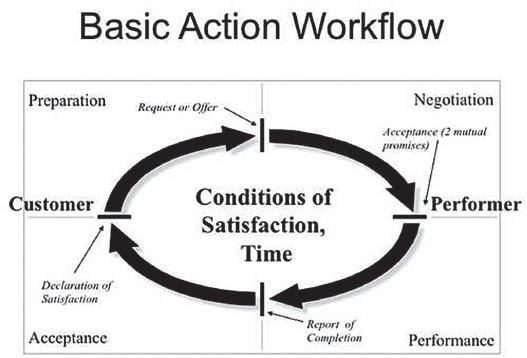
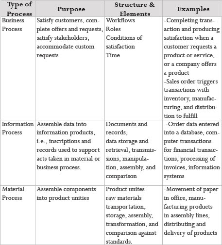

As we saw in the previous essays, there are four distinct moments in a conversation of action: request/offer; promise/acceptance (which we also call agreement); declaration of completion; and declaration of satisfaction. These moments and their preceding phases are illustrated in the loop or workflow (see “Basic Action Workflow”). In this essay, we will elaborate on the practical implications of these distinctions for creating workflows and business processes.
Let’s take a conversation between a business supervisor and a business consultant and move with it through the entire workflow:
Preparation -> Request: A business supervisor plans to present one of the new business offers developed in his area to his vice president and ultimately to the entire corporation for future sale to external customers. In order to prepare himself for a meeting with the vice president, he requests that his business consultant provide him with the necessary background information on the development of new business in their area within two days.
Negotiation -> Agreement: The business consultant already had a number of prior commitments to the business supervisor and doesn’t see how she can manage to complete the report on time. She negotiates with the supervisor by counteroffering to submit the report to him within three days. This won’t work for the supervisor, so he, in turn, counterrequests that she delay one of her other commitments in order to complete the new business report on time. The business consultant agrees to do so.
Again, notice that the future that is built in this exchange is mutual; it’s not a one-sided commitment by either the business consultant or her manager. The compromise involves changes in the business consultant’s schedule, including when and whether she completes other, previously planned projects. Likewise, the manager takes for granted that the report will get completed; he won’t ask someone else to prepare the same report, or work on it himself.
If we don’t take such a mutual commitment seriously, we might produce bad moods, breakdowns in our work, and possible damage in our work relationships. For example, the supervisor might get angry if the report isn’t completed in time for his meeting, or the business consultant might get annoyed if she spends two days preparing a report that her supervisor files away and never uses. This kind of behavior not only produces immediate breakdowns for the business supervisor and the business consultant, but could also erode trust between the two of them, making them much less likely to accomplish successful work together in the future.
Performance -> Declaration of Completion: Now the business consultant gets to work: she interviews several CSRs and services and asks about their involvement in developing new business; she has an extensive phone conversation with the supervisor of new business development at Distribution Business Services (DBS) to get some advice from him; and she puts together a plan for designing the report. Finally, on the evening of the second day, she’s compiled the report and leaves it on the business supervisor’s desk.
Acceptance -> Declaration of Satisfaction: The next morning, the business supervisor finds the report on new business on his desk. He reads it, then sends the business consultant an e-mail message thanking her for the good work she’s done. When she receives that message, the consultant is quite proud. The workflow is complete.
But what if the business supervisor is not satisfied with the report? In that case, the situation would look quite different: The next morning the business supervisor finds the report on his desk. After reading it, he calls the business consultant to his office and tells her that she didn’t include the potential profitability margins for the newly developed product in the report. Without those figures, his proposal to the vice president would lack credibility, he tells her. Before leaving to go to rework the report, the business consultant makes sure that all other items in the report are to the supervisor’s satisfaction. As you can see, they went back to the negotiation phase to clarify the conditions of satisfaction. After coming to agreement again, the business consultant adds the missing figures to the report, and then returns it to the supervisor. He thanks her for the changes and then sits down to prepare himself for his meeting with the vice president.

From Workflow to Business Process
We can look at the workflow as a simple transaction between two parties—the customer and the performer. It constitutes the basic unit in a network of workflows that we call a business process. All action that happens in business starts with either an offer by a performer or a request by a customer somewhere in this network. In our example regarding the development of new business, we could identify a business process with the following loops:
Looking at business processes this way helps us identify areas where we encounter breakdowns in our work. These breakdowns could be based on missing conditions of satisfaction, confusion about who the customer or the performer is, missing phases in the workflow, duplication of loops, and so forth. The workflow then becomes a useful tool for observing and redesigning the way we work together.
Business Process Design
In identifying the various distinctions of a conversation for action or workflow, let’s remind ourselves that we do this for the sake of observing what we produce in speaking with each other. The purpose of introducing you to these distinctions isn’t for you to memorize or learn them like a laundry list, but rather to open your horizons to observing the moves you and the people around you make in speaking. Observing these distinctions in language will enable you to take new and different actions with the people at work. And then we can begin to alter, modify, or even totally change how we do business with our co-workers and our customers.
In order to follow through on the kinds of offers we can invent with this type of listening, we need a way to rapidly reconfigure the business processes of our own companies. Our interpretation of business process design is based on the workflow “atoms” that we presented above in our discussion of coordination of action. In distinguishing this simple set of primitives for cooperative work, we are doing much more than giving people a different way of thinking about their jobs. We are also laying the foundation of a discipline for observing the “soft processes” in business that have resisted traditional approaches to business analysis and design. The processes typically considered “soft”—such as the coordination between people and unstructured work—are now becoming the focus of competitive advantage. Significant opportunities are opening up for people who can manage these processes with the same rigor applied to manufacturing. As we’ve developed our work on these topics in great detail elsewhere, we are only going to touch on them briefly.
In the accompanying chart, “Types of Processes,” we present three different ways of looking at the processes that make up a business. The earliest tradition interprets business as what we call a material process: a sequence of physical actions (movement, storage, transformation, etc.) that are performed on raw materials to produce finished products. The fields of industrial and mechanical engineering have long provided the foundation for analyzing and improving the productivity of these processes in manufacturing. More recently, the widespread use of computers in business has resulted in a concern for managing data and the company’s information processes. Just as material processes manipulate physical objects, information processes are viewed as sequences of actions that manipulate information. These processes may include moving, storing, comparing, and transforming information about customers, transactions, inventory, financial performance, and so on. In response to this need, new disciplines have arisen, such as computer-assisted software engineering and information technology design.
Material and information processes have proved themselves beneficial for understanding business situations that are structured, specifiable, and repeatable. However, they have not provided the same benefits for analyzing the often unstructured and unique interactions of the “human side” of work. With the workflow structure that we presented earlier, we can apply an equivalent rigor to the observation of a third kind of process, the business process. Rather than tracking the flow of materials or data, business processes chart the coordination of action between people (and sometimes machines) involved in an activity.
Interpreting business processes in this way doesn’t challenge the existing traditions of material and information processes. Instead, it complements them by adding a third perspective. Material processes allow us to design the flow of materials on an assembly line or in an office. Information processes allow us to design the movement of data within an organization. Likewise, business processes allow us to design the coordination and flow of commitments that lead to customer satisfaction. There is, however, a sense in which business processes are senior to the other two types, for these two types of processes are always triggered by the commitments represented in business processes. No order entry process is going to start without a customer request, and no car will roll off the line without the promises written into a production schedule.
Since business processes provide a means of observing a company’s coordination at this basic level, they also provide a set of principles for process analysis and reengineering that’s independent of any particular business or any future changes in technology. Furthermore, the same few primitive distinctions for observing business processes can be applied uniformly to any part of the business. From the standpoint of workflow structure, there’s little difference between the CEO requesting strategic directions from a company’s executives and a customer asking a service representative for help in installing a new software package.
This last point presents a new and dramatic possibility: that we can learn to design an entire business with as much rigor as we use in configuring a computer network or production line. Not only that, but any design that used the principles we have presented here would be built from the very start around customer satisfaction. We expect that if such a practice were to become commonplace, it would generate new tools, new skills, and new ways to create and manage competitive enterprises.
